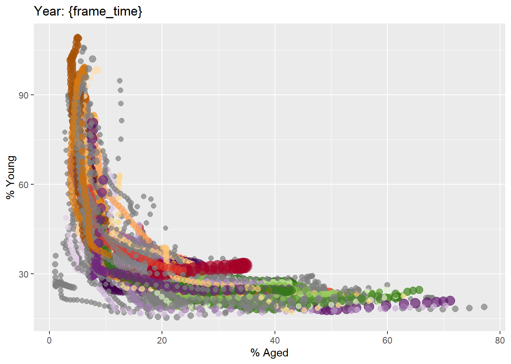

pacman::p_load(readxl, gifski, gapminder,
plotly, gganimate, tidyverse)Hands-on Exercise 4
How Does Animation Work in Data Visualization ?
When creating animation, the plot doesn’t move. Instead, individual plots are stitched together like a video. Each frame is a different plot when conveying motion, which is built using relevant subset of the aggregate data. Then the subset drives the flow of the animation when stitched back together.

Terminologies in this Exercise:
Frame: each frame represent different point in time or category. When the frame changes, the data point also changes which represent the updated version of data.
Animation Attributes: the settings that control how the animation behaves e.g. duration of each frame or which plot would be the start of animation).
Getting Started
In this exercise we’ll be using the following libraries:
gganimate: extends grammar of graphics implemented by ggplot2 to include animation.
gifski: converts image frame to high quality GIF.
gapminder: is an excerpt of data available at gapminder.org. We’ll be using the country_colors scheme in this exercise.
plotly
tidyverse
Import Data
col <- c("Country", "Continent")
globalPop <- read_xls("GlobalPopulation.xls",
sheet="Data") %>%
mutate_at(col, as.factor) %>%
mutate(Year = as.integer(Year))
How to extract data from .xls file
use `read_xls` instead of
read_csvuse
mutate_at()to target specific columns to apply function (convert variable, numeric transformation, string transformation, etc).use
mutate()to modify or add column
Animate Visualization using gganimate
There are a few arguments can be used in gganimate to animate visualizations, such as:
transition_*(): defines how data should be spread out and how it relates to itself across time.
view_*(): defines how the axes (zoom, pan) move during the animation (controls what part fo the plot is visible and who it changes).shadow_*(): defines how data from other points should be presented in the given point in time.enter_*()/exit_*(): defines how data goes in and goes out during animation.ease_aes(): controls the style of the movement fo the animation
Example: Build Population Bubble Plot
In this example, we’ll build a bubble plot uisng ggplot2.
ggplot(globalPop, aes(x = Old, y = Young,
size = Population,
colour = Country)) +
geom_point(alpha = 0.7,
show.legend = FALSE) +
scale_colour_manual(values = country_colors) +
scale_size(range = c(2, 12)) +
labs(title = 'Year: {frame_time}',
x = '% Aged',
y = '% Young') 
Animated Bubble Plot
We can animate the plot by adding to the code:
transition_time()to create transition through the YEAR variable (animation moves as the year changes)ease_aes()is used to control the of aesthetics. The default islinear, but we can choose from quadratic, cubic, quartic, quintic, sine, circular, exponential, elastic, back and bounce.
ggplot(globalPop, aes(x = Old, y = Young,
size = Population,
colour = Country)) +
geom_point(alpha = 0.7,
show.legend = FALSE) +
scale_colour_manual(values = country_colors) +
scale_size(range = c(2, 12)) +
labs(title = 'Year: {frame_time}',
x = '% Aged',
y = '% Young') +
transition_time(Year) +
ease_aes('linear') 
Animate Visualization with Plotly (ggplotly())
ggplotly() supports key frame animations through frame argument.
gg <- ggplot(globalPop,
aes(x = Old,
y = Young,
size = Population,
colour = Country)) +
geom_point(alpha = 0.7, show.legend = FALSE) +
scale_size(range = c(2, 12)) +
labs(x = '% Aged', y = '% Young')
ggplotly(gg)Animate Visualization with Plotly (plot_ly())
plot_ly() also supports key frame animations through frame argument.
bp <- globalPop %>%
plot_ly(x = ~Old,
y = ~Young,
size = ~Population,
color = ~Continent,
sizes = c(2, 100),
frame = ~Year,
text = ~Country,
hoverinfo = "text",
type = 'scatter',
mode = 'markers'
) %>%
layout(showlegend = FALSE)
bp